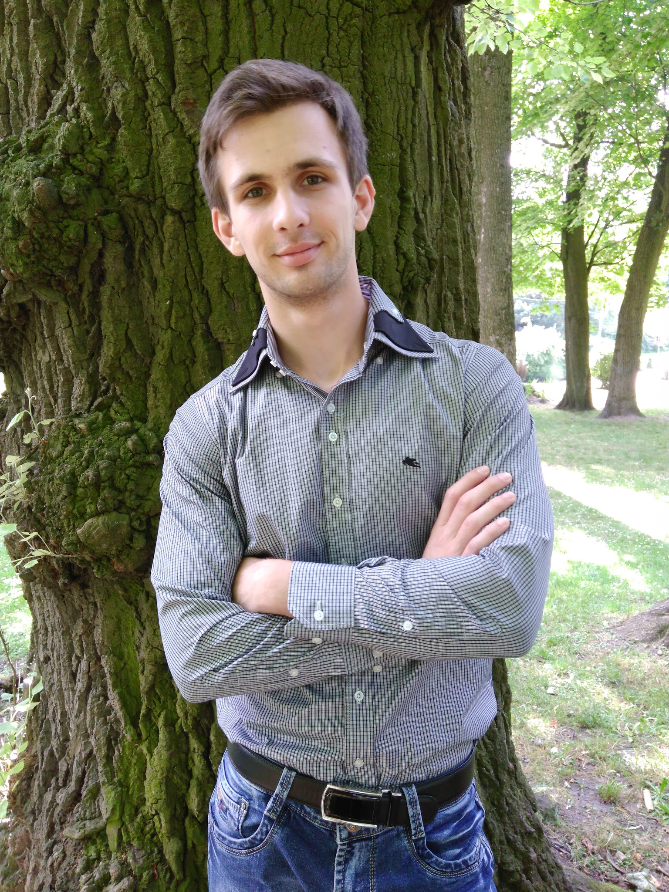

Taras Hlukhovetskyi
Trainne/Junior Front-end developer

Skills
- Knowledge of HTML
- Knowledge of CCS
- Basic knowledge of Java Script
Languages
- Ukrainian(Native)
- English(B1)
- Russian(Fluent)
Education
- Ukrainian Academy of Printing 2015 - 2016
- Specialist's degree in Technology of Packaging Design and Production. Obtained qualification of Technology
Engineer.
- Ukrainian Academy of Printing 2013 - 2015
- Bachelor of Publishing and Printing Production.
- Lviv Printing College of the Ukrainian Academy of Printing 2009 - 2013
- Junior specialist in Printing production.
Work experience
- Social worker in Municipal Enterprise "Social warranties" 04.2015 - current
- Processing of appeals of citizens
- Communication with servicing population by enterprises and organizations
- Admin of the gym "Samson" (work part-time) 05.2017 - 01.2018
- Providing livelihoods of the gym
- Customer consultation
- Work on a private person (work part-time) 12.2016 - 04.2017
- Distribution of advertising information on Internet sites
Contact
Pustomyty, Lviv, Ukraine
vest131@gmail.com
Skype: Ligred
Facebook